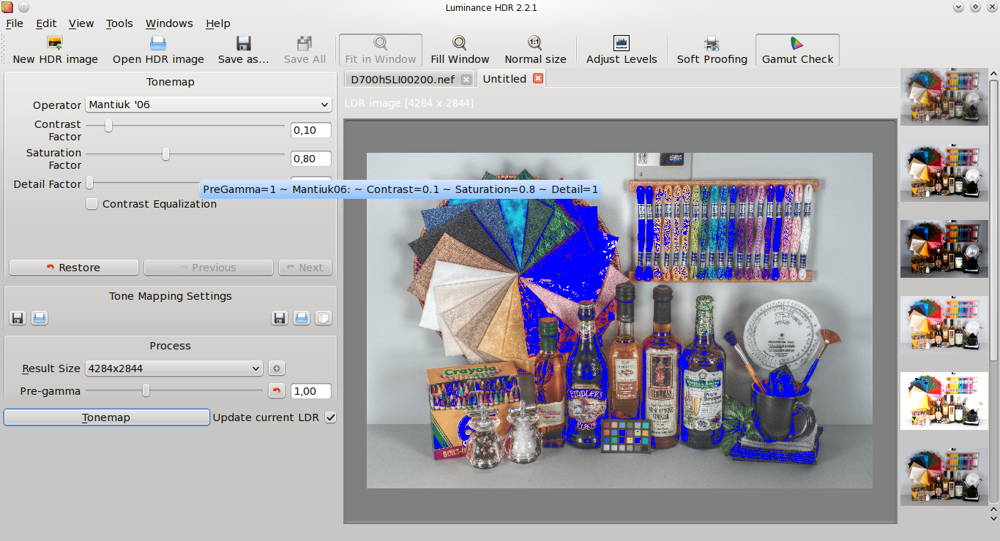

Luminance HDR has the ability to read the color profile embedded in your RAW or JPEG files, convert the colors to the internal sRGB color space for processing with the program, use the provided monitor profile to show the result in your monitor, do soft proof and gamut check using the printer profile provided.
To begin with the color management support in Luminance HDR click on Tools->Preferences then select Color Management.
Select a profile for the monitor, printer and camera (or set the option to Built-in to use the embedded profile).
After tonemapping an HDR, the resulting image is displayed on the monitor with the proper colors, you can then click on the Soft Proofing button on the toolbar to see how the image will appear once printed on your printer. Clicking on the Gamut Check button will show in blue the colors that are out of gamut, that is cannot be reproduced by your printer.
If you choose to save the LDR in TIFF or JPEG format the standard sRGB profile is automatically embedded to the file for further processing with another color managed application.
